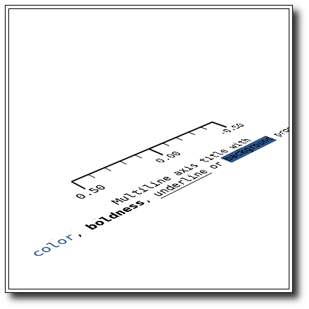

glut-axis.cc

#include "object.h"
#if defined(__APPLE__)
#include <Glut/glut.h>
#else
#include <GL/glut.h>
#endif
#include <cstdlib>
#include "scene.h"
#include "axis.h"
ScenePtr scene = ScenePtr (new Scene);
unsigned int button = 0;
void on_key_press (unsigned char key, int x, int y) {
scene->key_press (key);
}
void on_special_key_press (int key, int x, int y) {
unsigned char k = 0;
switch (key) {
case GLUT_KEY_UP: k = 'i'-'a' + 1; break;
case GLUT_KEY_DOWN: k = 'j'-'a' + 1; break;
case GLUT_KEY_LEFT: k = 'b'-'a' + 1; break;
case GLUT_KEY_RIGHT: k = 'f'-'a' + 1; break;
case GLUT_KEY_HOME: k = 'a'-'a' + 1; break;
case GLUT_KEY_END: k = 'e'-'a' + 1; break;
default: k = 0; break;
}
scene->key_press (k);
}
void on_mouse_button (int b, int state, int x, int y) {
switch (b) {
case GLUT_LEFT_BUTTON: button = 1; break;
case GLUT_MIDDLE_BUTTON: button = 2; break;
case GLUT_RIGHT_BUTTON: button = 3; break;
default: button = 0; break;
}
switch (state) {
case GLUT_UP:
scene->button_release (button, x, y);
break;
case GLUT_DOWN:
scene->button_press (button, x, y);
break;
}
glutPostRedisplay();
}
void on_mouse_move (int x, int y) {
scene->mouse_motion (button, x, y);
glutPostRedisplay();
}
void display (void) {
glClearColor (1,1,1,1);
glClear(GL_COLOR_BUFFER_BIT | GL_DEPTH_BUFFER_BIT);
scene->render ();
glutSwapBuffers();
}
void reshape (int width, int height) {
glViewport (0,0,width, height);
glutPostRedisplay();
}
int main (int argc, char **argv) {
glutInit (&argc, argv);
glutInitDisplayMode (GLUT_DOUBLE | GLUT_RGB | GLUT_DEPTH);
glutCreateWindow ("Axis");
glutReshapeFunc (reshape);
glutDisplayFunc (display);
glutMouseFunc (on_mouse_button);
glutMotionFunc (on_mouse_move);
glutKeyboardFunc (on_key_press);
glutSpecialFunc (on_special_key_press);
glutReshapeWindow (400,400);
AxisPtr axis = AxisPtr (new Axis ());
axis->set_title ("\nMultine line axis title with \n"
"\033[34mcolor\033[00m, "
"\033[01mboldness\033[00m, "
"\033[04munderline\033[00m or "
"\033[44mbackground\033[00m properties");
scene->add (axis);
scene->set_bg_color (1,1,1,1);
scene->set_zoom (2.5);
glutMainLoop();
return 0;
}